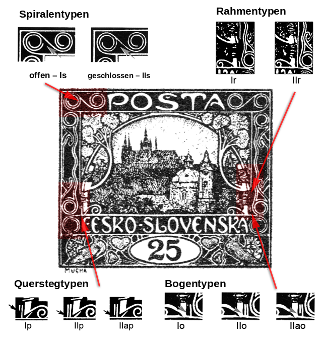

Typen der fünften Zeichnung
Der Katalog kennzeichnet die fünfte Zeichnung als große weiße Aufschrift auf farbigem Grund, ohne Strauch und Sonne, mit größerer Zeichnung der St.-Nikolaus-Kirche und abweichendem Ornament in der Bildumrahmung. Aus meiner Sicht ist sie sammlerisch die interessanteste: Die meisten Werte, bei denen sie verwendet wurde, tragen auf verschiedenen Markenfeldern verschiedene Kombinationen von Typen mehrerer Objekte der Zeichnung.
Die Typen gliedern sich in vier Kategorien:
Mit einem Klick auf die einzelnen Typen gelangen Sie zu ihrer Beschreibung und zur Darstellung der entsprechenden Markenfelder. Wo sich welches Objekt in der Zeichnung befindet, zeigt das folgende Schema:

Für den Wert 15h ist die Bearbeitung ausführlicher — mit der Liste der Felder nach Platten — auf der Seite Typen der fünften Zeichnung auf der 15h.